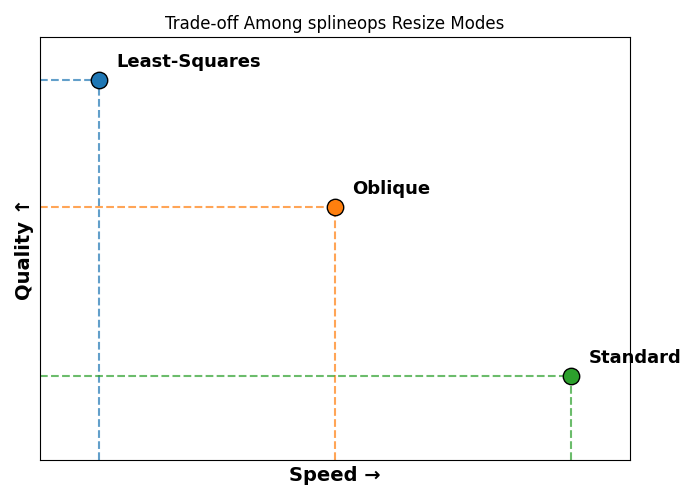

Resize#
Overview#
The resize function in the splineops library delivers high-performance, high-fidelity resizing for N-dimensional data arrays using advanced spline-based methods [1], [2], [3].
It offers three distinct modes, each designed for a different balance of speed, accuracy and control:
Standard Interpolation: fast and smooth. Ideal for real-time and general-purpose applications. Efficient in memory and compatible with float32 precision.
Least-Squares Projection: highest quality. Designed for applications where fidelity matters most (e.g. medical imaging, scientific computing). Optimized for float64 precision.
Oblique Projection: the sweet spot. Balances quality and performance, using smart approximations to deliver nearly least-squares quality at interpolation-level speed.
{kind=link}

Each method is built on solid spline theory and engineered for performance in real-world applications. Whether you’re building fast visualizations or precision-critical pipelines, resize adapts to your needs with consistent, artifact-resistant output and a clean API.
Standard Interpolation#
Fast and efficient spline-based interpolation, suitable for most applications.
B-spline interpolation reconstructs a smooth function from samples using a B-spline as basis function. The interpolation function is defined as
where:
the B-spline of degree \(n\) is \(\beta^{n}(x)\);
the interpolation coefficients \(c_k\) are obtained by the application of a prefilter to the samples.
The key property of B-splines is their compact support, which ensures efficient computation while maintaining high smoothness. Given a discrete sequence \(\{f_k\}\) of samples, the interpolation requirement
is satisfied by a proper choice of the coefficients \(c_k\). We establish them through a digital prefiltering step that involves the application of a recursive IIR filter to the sequence \(\{f_k\}\).
Least-Squares Projection#
For applications where quality is paramount. Produces optimal approximations in a spline space, minimizing aliasing and reconstruction error.
Least-squares projection aims to reconstruct a signal by projecting it onto a spline space in a way that minimizes the \(L_2\) error between the original signal and its resized version.
This approach uses two spline families:
Synthesis spline: defines the space onto which the resized image is reconstructed (e.g., cubic B-spline basis).
Analysis spline: used to analyze the input image before projection, typically chosen to be biorthogonal to the synthesis spline to ensure a true orthogonal projection.
Both the analysis and synthesis functions are typically B-splines of the same degree (e.g., degree 3 for cubic splines), ensuring that the projection is orthogonal and optimal in the least-squares sense. The interpolation spline is also of the same degree, providing a consistent model throughout.
The goal is to find the spline function \(s(x)\) in the synthesis space \(V_n\) that best approximates a given input \(f(x)\) by minimizing the squared error:
This leads to a projection of the form:
where:
\(\varphi_k(x)\) are the integer-shifted synthesis splines (e.g., cubic B-splines),
\(\tilde{\varphi}_k(x)\) are the corresponding analysis functions (their duals),
\(\langle f, \tilde{\varphi}_k \rangle\) are the analysis coefficients (inner products of \(f\) with the dual functions).
The biorthonormality condition
ensures that this projection minimizes energy loss. The use of matching spline degrees for both analysis and synthesis (e.g., cubic–cubic) ensures an orthogonal projection and yields the best possible approximation in terms of signal-to-noise ratio (SNR).
This method is especially powerful for:
downsampling, where aliasing suppression is critical,
interpolating scientific or medical data, where signal fidelity matters most,
use in invertible pipelines, as the projection preserves information structure well.
While least-squares projection is computationally more intensive and designed for float64 precision, it offers the gold standard in quality among the available resizing methods in splineops.
Oblique Projection#
A near-optimal, performance-friendly alternative to least-squares projection. Achieves high-quality resizing with significantly lower computational cost.
Oblique projection is a generalization of least-squares projection where the synthesis and analysis spline spaces are allowed to differ. Instead of computing an orthogonal projection (where the same basis is used for both approximation and analysis), the method employs an auxiliary analysis function \(\psi(x)\) distinct from the synthesis function \(\varphi(x)\). The resulting approximation is given by:
where:
\(\varphi_k(x)\) are the synthesis basis functions (typically B-splines of degree \(n\));
\(\psi_k(x)\) are the translated analysis functions, often chosen to be simpler or more localized.
In the exact least-squares setting, the analysis functions are the biorthonormal duals \(\tilde{\varphi}_k\) of the synthesis basis \(\varphi_k\). Oblique projection replaces these exact duals by a simpler analysis family \(\psi_k\) (typically lower-degree splines), which is no longer strictly biorthonormal but is much cheaper to implement. This yields a near-least-squares projection at a fraction of the cost.
This formulation leads to an oblique rather than orthogonal projection. It trades off a small loss in optimality for improved speed and numerical stability. Empirical results show that the signal-to-noise ratio (SNR) degrades only slightly (e.g., 0.1-0.4 dB) compared to the exact least-squares projection [2].
Spline Degrees#
In the splineops.resize implementation, the oblique projection is configured to use:
Interpolation degree: determines the input model and spline interpolation order.
Synthesis spline: matches the interpolation degree (used to reconstruct the resized image).
Analysis spline: set to a lower degree, typically interpolation degree - 1.
For example:
Method |
Interpolation Degree |
Synthesis Spline Degree |
Analysis Spline Degree |
|---|---|---|---|
|
1 |
1 |
0 |
|
2 |
2 |
1 |
|
3 |
3 |
1 |
The synthesis spline determines the space onto which the image is projected. The analysis spline is used to compute inner products with the scaled signal, effectively acting as a prefilter. Choosing a lower-degree analysis spline (e.g., linear) simplifies the filter computation and enables efficient recursive implementations using finite differences.
Computational and Practical Implications
The oblique method retains much of the quality of least-squares projection, especially for moderate downsampling factors.
It operates correctly in float32 precision and requires less memory and fewer computations than its least-squares counterpart.
Because the projection is not orthogonal, there may be small residual aliasing or reconstruction errors, especially for high-frequency content or very aggressive downsampling.
This makes oblique projection a compelling compromise: faster and more stable than least-squares, but still significantly more accurate than naive interpolation.